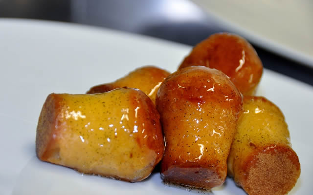

Babà

Babà, a traditional Neapolitan dessert, is a soft
and spongy pastry soaked in a sweet syrup, often flavored with rum or
other liqueurs. Its rich texture and delightful taste make it a
beloved treat enjoyed by many.
Ingredients for an authentic Italian Babà
- All-purpose flour
- Active dry yeast
- Sugar
- Warm water
- Eggs
- Unsalted butter
- Salt
- Lemon zest (optional)
- Rum or other liqueur (for the syrup)
- Sugar (for the syrup)
- Water (for the syrup)
Steps
-
In a small bowl, dissolve the yeast and a teaspoon of sugar in warm
water. Let it sit for about 5 minutes until it becomes frothy.
-
In a large mixing bowl, combine the flour, remaining sugar, salt, and
lemon zest (if using).
-
Make a well in the center of the dry ingredients and pour in the yeast
mixture. Mix until a sticky dough forms.
- Add the eggs one at a time, mixing well after each addition.
-
Cut the butter into small pieces and gradually incorporate it into the
dough. Knead the dough for about 10 minutes until it becomes smooth and
elastic.
-
Cover the dough with a clean kitchen towel and let it rise in a warm
place for about 1-2 hours, or until it doubles in size.
-
Preheat the oven to a specified temperature mentioned in the recipe.
- Grease a Babà mold or individual Babà molds with butter or oil.
-
Punch down the dough and divide it into portions, shaping each portion
into a small ball. Place the balls into the greased molds.
-
Cover the molds with a towel and let the dough rise for another 30-45
minutes.
-
Bake the Babà in the preheated oven for the specified time or until they
turn golden brown and are cooked through.
-
While the Babà are baking, prepare the syrup by combining sugar and
water in a saucepan. Bring the mixture to a boil, then remove it from
heat and stir in the rum or other liqueur.
-
Once the Babà are out of the oven, immediately brush them generously
with the syrup while they are still warm.
-
Let the Babà cool completely in the molds, then remove them gently.
-
Serve the Babà Napoletano as is or garnish them with whipped cream,
fruit, or additional syrup, if desired.